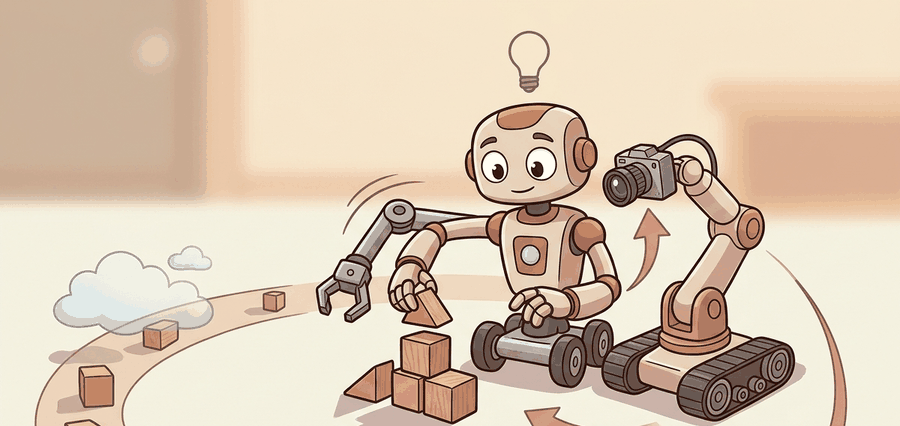

"The robot arms agreed to share data. Their grippers asked to see the contract."
A Diplomat For Robot Bodies

Cross-embodiment pooling asks whether data from one robot can improve another robot. This is the central promise behind Open X-Embodiment and RT-X style models, but it requires careful normalization because different robots do not share the same joints, grippers, workspaces, or action limits.
Normalization Targets
Pooling can happen in observation space, action space, latent space, or task space. A common strategy is to express actions as end-effector deltas, normalize continuous values, and provide embodiment tokens or metadata so the model knows which body produced the trajectory.
For an action $a_t$ with dataset mean $\mu_e$ and scale $\sigma_e$ for embodiment $e$, a normalized action can be written as:
$$ ilde{a}_t = (a_t - \mu_e) / \sigma_e.$$
The subscript matters. Using a global mean across incompatible robots can hide systematic body differences and produce commands that are invalid for smaller or slower platforms.
Good pooling removes arbitrary units and scales. Bad pooling erases the embodiment information needed to interpret the action.
Use Open X-Embodiment tooling, RLDS episode schemas, or LeRobot conversion utilities to keep embodiment metadata attached during pooling. The shortcut reduces file-format labor, but the researcher still chooses the action normalization and held-out robot protocol.
Code Fragment 1 demonstrates embodiment-aware normalization for two robots with different action ranges.
# Normalize actions per embodiment so robot-specific scales are preserved.
# The model can then receive both the normalized action and the embodiment id.
actions = {
"small_arm": [0.01, 0.02, 0.03],
"mobile_dual_arm": [0.08, 0.10, 0.12],
}
for robot, values in actions.items():
mean = sum(values) / len(values)
scale = max(values) - min(values)
normalized = [round((v - mean) / scale, 2) for v in values]
print(robot, normalized)The expected output shows identical normalized values for two robots, but the interpretation is not "the robots did the same thing." It means each robot's local action range has been centered and scaled. A training batch should therefore keep the normalized action together with an embodiment identifier, action-unit metadata, and the inverse transform needed to recover a valid hardware command.
Mechanisms For Cross-Embodiment Transfer
Cross-embodiment transfer usually relies on one of three mechanisms. The first is shared task semantics: language or goal images say "pick up the mug" even when two robots use different joints. The second is shared observation structure: cameras, object states, and scene geometry can be encoded by a common visual backbone. The third is conditioned action decoding: the policy predicts actions in a representation that is decoded differently for each robot body.
These mechanisms make different assumptions. Shared task semantics assumes that labels are consistent across datasets. Shared observation structure assumes that visual features relevant to one robot also matter to another. Conditioned action decoding assumes the model receives enough morphology and control-mode metadata to avoid producing commands that the target robot cannot execute.
When pooled training fails, separate four causes: representation mismatch, source imbalance, action infeasibility, and evaluation leakage. Representation mismatch means the shared tokens do not describe the same physical variables. Source imbalance means one dataset dominates gradients. Action infeasibility means normalized outputs decode to unsafe or unreachable commands. Evaluation leakage means train and validation share near-duplicate tasks, scenes, or collection bursts.
Toolchain Pattern
A practical cross-embodiment stack starts with source-specific loaders, converts each source into a common episode schema, then adds an embodiment adapter. The adapter can be as simple as a robot-id embedding and per-robot action normalizer, or as complex as a morphology graph encoding links, joints, limits, and gripper type. The important rule is that adapter inputs are saved in the dataset card, not hidden in model code.
- Load one batch per source and print observation keys, action keys, and units.
- Compute per-source action statistics before and after normalization.
- Train a small source classifier on the shared representation.
- If the classifier easily identifies source from irrelevant artifacts, audit visual or metadata leakage.
- Evaluate per source and per embodiment before reporting any aggregate result.
| Choice | Benefit | Risk |
|---|---|---|
| End-effector actions | More comparable across arms. | Loses joint-limit and redundancy information. |
| Joint actions | Faithful to hardware. | Hard to share across different kinematic chains. |
| Language labels | Bridge tasks across datasets. | Instruction styles can be inconsistent. |
| Embodiment tokens | Let the model condition on body identity. | May memorize robot-specific shortcuts. |
A pooled model can improve average performance while hurting a minority robot or task family. Always report per-embodiment and per-task results, not only aggregate success.
If a single-arm tabletop dataset is mixed with bimanual mobile data, the split should include held-out robots and held-out tasks. Otherwise the model may look cross-embodied while succeeding only on the dominant source distribution.
RT-X models show positive transfer from broad robot data, but the field still lacks a mature theory of when embodiments help or interfere. Current research is moving toward embodiment-aware tokenization, morphology-conditioned policies, and evaluation panels that expose negative transfer.
When you pool two datasets, can you say which representation is shared and which metadata preserves robot identity? If not, the pooling recipe is under-specified.
Cross-embodiment learning is not just adding datasets together. It is a representational choice about what should be shared and what must remain body-specific.
Design a pooling experiment with one held-out robot and one held-out task. Specify which metrics you will report separately for each embodiment.
What's Next
Section 24.4 asks how performance changes as data, model capacity, and task diversity scale.
The central reference for cross-embodiment robot data, standardized dataset release, and RT-X style transfer across robot bodies.
Khazatsky, A. et al. (2024). DROID: A Large-Scale In-The-Wild Robot Manipulation Dataset.
Provides an in-the-wild manipulation dataset with diverse scenes, collectors, tasks, and detailed hardware reproduction guidance.
Walke, H. R. et al. (2023). BridgeData V2: A Dataset for Robot Learning at Scale.
A large manipulation dataset designed around open-vocabulary multi-task learning, goal images, language, and data-scale experiments.
Google DeepMind Open X-Embodiment Repository.
Shows the released dataset structure and RLDS episode organization used by the Open X-Embodiment ecosystem.
LeRobotDataset v3.0 Documentation.
The practical reference for standardized multimodal robot time-series data, metadata, indexing, and Hub visualization.